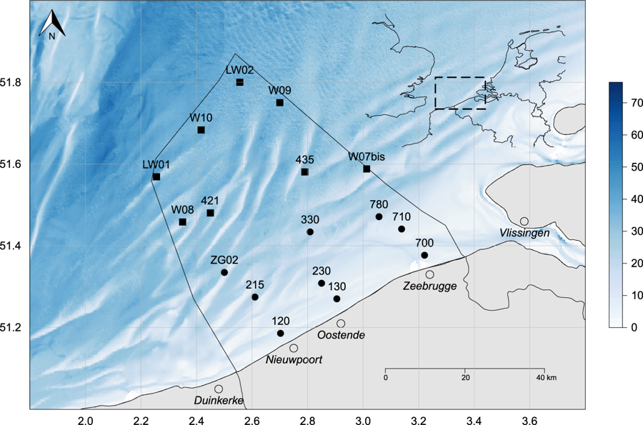

Data on CTD-profile data from LifeWatch sampling campaigns in the Belgian part of the North Sea.
How to interpret this dataset
Query options
-
Timeframe: Starting and stopping date for the query.
-
Stations: Name or code of sampling station or receiver code.
-
Bins: Number of measurements in a certain depth bin.
Available columns
-
Station: Name or code of sampling station or receiver code.
-
CastId: Unique identifier to specify a single CTD-cast.
-
Depth: Bottom depth to surface from echosounder 200Hz in m.
-
Status: An identifier to specify whether a specific measurement was taken in the up-cast, the down-cast, near the bottom, or during the calibration-phase at the surface.
-
Latitude: Center latitude in decimal degrees, WGS84.
-
Longitude: Center longitude in decimal degrees, WGS84.
-
Time: Time in UTC, beginning of sample timeperiod.
-
Obs3+: Turbidity measured by the CTD (expressed in NTU)
-
AltM: Altimetry measured by the CTD (expressed in m).
-
Par: Photosynthetic Active Radiation.
-
FIECO-AFL: Fluorescence measured by the CTD (expressed in mg/m3).
-
Oxigenvoltage: Oxygen measured by the CTD (expressed in V).
-
Sbeox0Mg/L: Oxygen measured by CTD (expressed in mg/L).
-
Sbeox0PS: Oxygen percentage measured by CTD.
-
PrdM: Pressure measured by the CTD (expressed in db).
-
Temperature: Temperature of air or the water body, expressed in degrees Celcius.
-
C0uS/cm: Conducitivity of the water body, expressed in ms/cm.
-
Salinity: Salinity of the water body, expressed in PSU.
-
Soundspeed: The velocity of sound through the water body, expressed in m/s.
-
Density: Calculated densities of zooplankton expressed in specimens/m³, by using the count, fraction, volumeM or volumeC.
-
DescSpeed: The speed by which the CTD-carroussel was winched through the water column, expressed in m/s.
-
Flag: A quality flag associated with a certain measurement.
Abstract
In the framework of the Lifewatch marine observatory a number of fixed stations on the Belgian Part of the North Sea (BPNS) are visited on a monthly or seasonal basis using the RV Simon Stevin. A grid of nine stations covers the coastal zone and are sampled monthly. Eight additional stations, located further at sea, are sampled on a seasonal basis. This dataset contains CTD-profile data from LifeWatch sampling campaigns in the Belgian part of the North Sea.
How to cite these data
When using this tool, please acknowledge the LifeWatch Data Explorer in your work with the statment written below. Please also acknowledge the individual datasets used and mind their individual licenses: Find the complete list in this link to the IMIS metadata record of this data type.
This work makes use of the LifeWatch Data Explorer provided by VLIZ and funded by Research Foundation - Flanders (FWO) as part of the Belgian contribution to LifeWatch.
If you retrieved these data using the LifeWatch Data Explorer R package, you should also cite it as:
Francisco Hernandez, Nick Dillen and Salvador Fernández-Bejarano (2021). lwdataexplorer: Access to data from the LifeWatch Data Explorer. R package version 0.0.0.9000. https://lifewatch.github.io/lwdataexplorer/